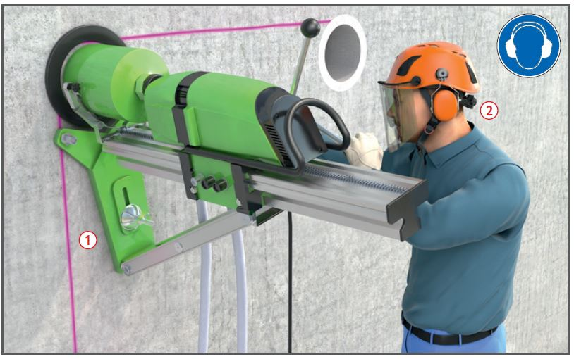
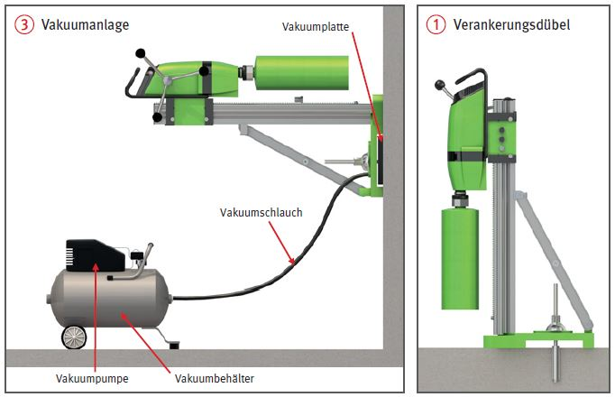

Gefährdungen
- Durch umstürzende, herabfallende Teile, unkontrolliert bewegte Maschinen- und Werkzeugteile können Personen verletzt werden.
- Durch rotierende Werkzeuge.
- Die Lärmbelastung kann zu Gehörschäden führen.
- Durch frei werdende Aerosole.
Allgemeines
- Vor Beginn der Arbeiten Arbeitsbereich auf Vorhandensein und Verlauf von Leitungen, Kanälen und nicht tragfähigen Bauteilen überprüfen.
- Das geeignete Betonbohrverfahren auswählen.
- Standsicherheit der Bauteile jederzeit gewährleisten.
- Keine tragende Teile, wie z. B. Unterzüge anbohren/beschädigen.
- Arbeitsbereich sauber und gut beleuchtet halten.
- Tägliche Sicht- und Funktionsprüfung der Bohrmaschine durchführen.
- Betriebsanleitung der Hersteller beachten.
Schutzmaßnahmen
- Geeignete Verankerung des Bohrständers entsprechend dem Untergrund und Bohrdurchmesser auswählen.
- Bohrständer sicher befestigen z. B. durch Schwerlastdübel
 , Durchankern, Vakuumplattenbefestigung
, Durchankern, Vakuumplattenbefestigung  .
.
- Dübel so nah wie möglich an die Bohrständersäule setzen.
- Bei Trockenbohrungen geeignete Absaugvorrichtungen verwenden wenn notwendig zusätzlich Luftreiniger einsetzen.
- Keine Arbeiten von Leitern.
- Gefahrbereiche in denen z. B. Bohrkerne, Bauteile herabfallen können absperren.
- Hilfsmittel zum Bewegen und Transportieren von Bohrkernen verwenden.
- Betriebsbereites Diamantkernbohrgerät nicht unbeaufsichtigt lassen.
- Verwendung nur von einwandfreien unbeschädigten Bohreinheiten, dieses vor der Benutzung überprüfen.
- Geeignete Maschinendrehzahl entsprechend dem Bohrkronendurchmesser einstellen.
- Hautkontakt mit Bohrschlamm vermeiden.
- Keine rotierenden Teile berühren.
- Bei Arbeiten über Bodenhöhe geräumige und tragfähige Standflächen schaffen, ggf. Absturzsicherungen anbringen.
- Nur gekennzeichnete Werkzeuge verwenden. Angegeben sein müssen Hersteller oder Vertreiber, max. Umdrehungszahl, Durchmesser und Einsatzbedingungen.
- Persönliche Schutzausrüstungen, wie z. B. Gehörschutz
 , Schutzhandschuhe, ggf. bei Staubentwicklung Atemschutz verwenden.
, Schutzhandschuhe, ggf. bei Staubentwicklung Atemschutz verwenden.

Zusätzliche Hinweise für Deckenbohrungen
- Auffangeinrichtungen für Bohrkerne verwenden.
- In Sonderfällen Absperren der Gefahrenbereiche.
- Sollte dies nicht möglich sein oder als zusätzliche Maßnahme, einsetzen eines Warnpostens, welcher außerhalb des Gefahrenbereiches steht.
Zusätzliche Hinweise für elektrisch betriebene Maschinen
- Elektrisch betriebene Maschinen und Geräte nur über einen besonderen Speisepunkt mit Schutzmaßnahme anschließen, z. B. Baustromverteiler mit RCD (Fl-Schutzeinrichtung).
- Bei frequenzgesteuerten Betriebsmitteln sind besondere Maßnahmen, z. B. allstromsensitive RCD (FI-Schutzeinrichtung), erforderlich.
- In engen leitfähigen Räumen
- Schutzkleinspannung (≤ 50 V AC/≤ 120 V DC) oder
- Schutztrennung mit nur einem Gerät einsetzen.
- In leitfähigen Räumen mit ausreichender Bewegungsfreiheit, kann RCD (FI-Schutzeinrichtung) mit IΔN ≤ 30 mA verwendet werden.
- Trenntransformator und Kleinspannungstransformator grundsätzlich außerhalb des Nassbereiches aufstellen.
Prüfungen
- Art, Umfang und Fristen erforderlicher
Prüfungen festlegen
(Gefährdungsbeurteilung) und
einhalten, z. B.:
- bei Montage der Maschine auf
augenfällige Mängel durch den
Geräteführer,
- nach Bedarf regelmäßig durch
eine "zur Prüfung befähigte Person".
- Ergebnisse dokumentieren.
Arbeitsmedizinische Vorsorge
- Arbeitsmedizinische Vorsorge
nach Ergebnis der Gefährdungsbeurteilung
veranlassen (Pflichtvorsorge)
oder anbieten (Angebotsvorsorge).
Hierzu Beratung
durch den Betriebsarzt.
07/2019